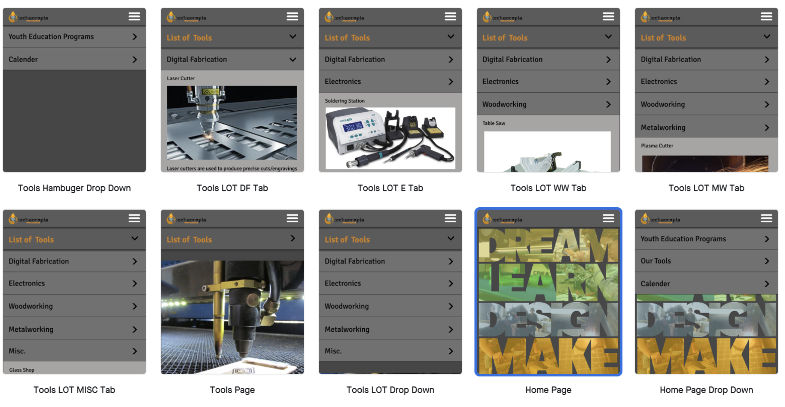
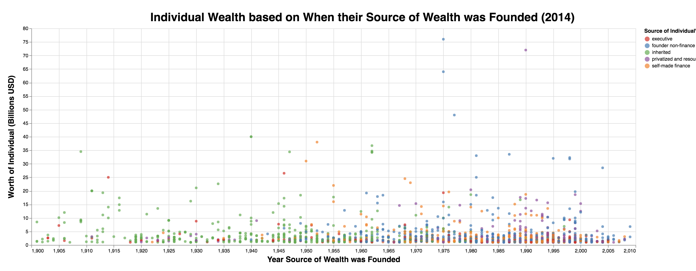
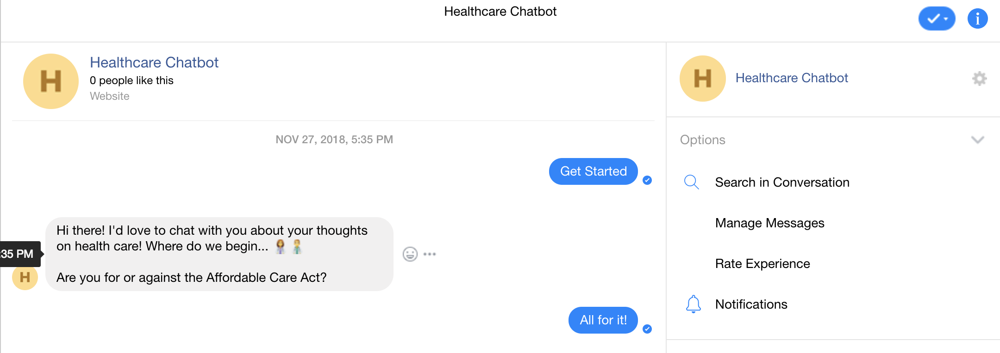
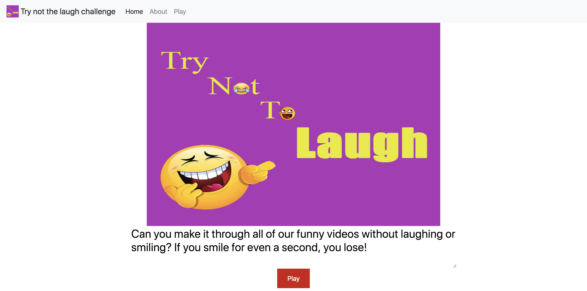

My Portfolio
by Andrew Hand
Posted on December 14, 2018 at 9:00 PM
About Me
My name is Andrew Hand, and I'm a computer science undergraduate at Worcester Polytechnic Institute. My concentration within computer science is computer networks and network security. I also have experience in full stack software development, namely the application I developed for the National Parks Service to track visitors using GPS location based services.
My Design Portfolio
Listed below is a summary of the design oriented projects I completed with a group of peers during my Human Computer Interactions (HCI) course. For more information on my design process used while completing the following projects check out the My Design Manifesto page linked on the toolbar. For more information on each project click the image following the description to see my blog post outlining my desing process.
Design for Others
The goal of this assignment was to design a mobile website for target demographic. The following link will take you to my design reflection that explains how we redesigned the Technocopia website for middle school students by emphasizing the available services Technocopia offers appropriate for the targeted age group.
Design for Understanding
For this assignment, we develop a series of data visualizations to dynamically display the data collected on billionaires in 2014. The goal was to present correlations we observed in the data set in a simple and compelling manner that any individual could interpret and understand.
Design for Tension
In order to bring a pressing issue of the Affordable Care Act to a individual, we created a simple chat bot that would prompt the user through conversation, regardless of their political stance, to better inform the user on this key political issue in the current judicial state of affairs.
Design for Well-Being
Everyone should smile, so to promote the concept of well being we hosted a try not to laugh challenge were users would watch a funny youtube video and try not to laugh. To detect the if the user laughed we tracked there facial expression using a computer web camera.
Design for Another World
Finally, we created a immersive scene in Virtual Reality that took the user to an ambient scene were they could relax, discover new sounds around them, and take a few photos while they're there.

"Have no fear of perfection — you’ll never reach it."
A special thank you to all my peers who helped me design these projects along the way. I hope you learned as much as me.